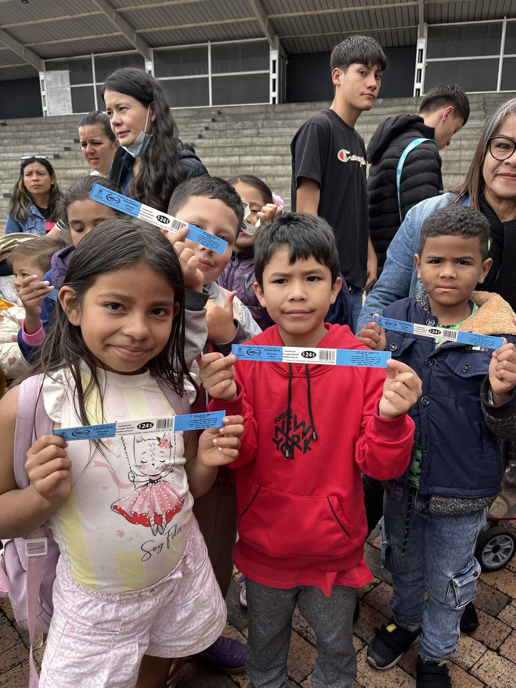

Quiénes somos
Somos la Fundación Un Lugar Donde Puedes Crecer. Promovemos la salud mental de niños, niñas y jóvenes con vulnerabilidad económica en Kennedy – Patio Bonito, Bogotá, con formación, atención psicosocial y alimentación. nombre legal por confirmar

Conoce la fundación
-
Nuestro objetivo
Por qué es urgente promover la salud mental de niños y adolescentes, y cómo lo hacemos.
Leer más sobre nuestro objetivo -
Misión y visión
Lo que hacemos y lo que queremos lograr para el año 2028.
Leer más sobre la misión y la visión -
Nuestro equipo
Las personas que dirigen, coordinan y lideran nuestros programas y proyectos.
Leer más sobre nuestro equipo -
Organigrama
Cómo se organiza el equipo, según el organigrama de agosto de 2024.
Leer más sobre el organigrama
Conoce nuestro trabajo
Seis programas llevan nuestro objetivo a la práctica, con los niños y con sus familias.
Pendientes de confirmación (vista previa)
Cada elemento marcado por confirmar en esta página depende de una suposición de trabajo o de información que la fundación aún no ha confirmado. Nada se publica hasta que la fundación lo confirme.
- Nombre legal: «Fundación Un Lugar Donde Puedes Crecer» viene de la política de tratamiento de datos; falta confirmar el nombre registrado exacto.
- Consentimiento de imagen: la foto de esta página (niños y niñas con sus manillas de una salida a Mundo Aventura en junio de 2025, publicada en la página de inicio actual) no tiene consentimiento registrado.
- Menú: la etiqueta «Conoce la fundación» para esta página es una propuesta.
- Pie de página: NIT y dirección registrada; que los números de WhatsApp y los correos sean los públicos.